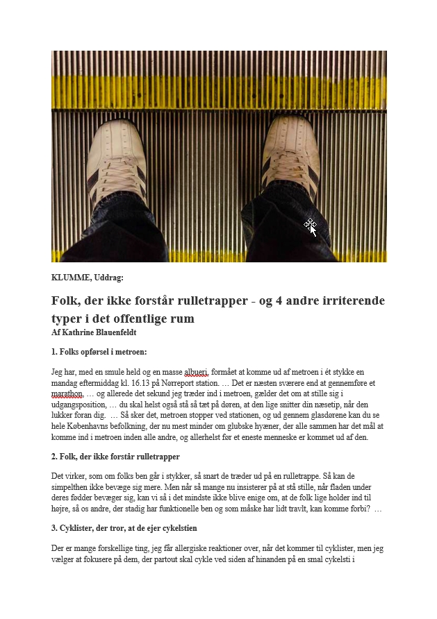
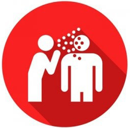
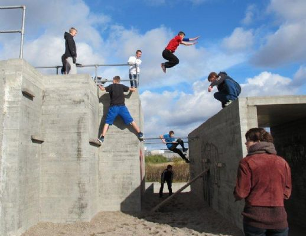

FP9 Dansk, skriftlig fremstilling
Du skal vælge en af disse opgaver:
1 Det kolde gys
2 Brok, brok og mere brok
3 Ord sætter spor
4 Et fedt sted
Du skal skrive den valgte opgaves nummer og titel på din besvarelse.
1 Det kolde gys
2 Brok, brok og mere brok
3 Ord sætter spor
4 Et fedt sted
Du skal skrive den valgte opgaves nummer og titel på din besvarelse.
Før du skriver
Til eleven
Til denne prøve i skriftlig fremstilling har du adgang til internettet.
Du må ikke kommunikere eller dele dine dokumenter med andre under prøven.
Nogle af opgaverne kræver, at du skal søge informationer på internettet til brug for din besvarelse. I andre opgaver er det en åben mulighed at søge fakta og inspiration.
Layoutet af din besvarelse indgår i vurderingen. Tænk derfor på, at du udover tekst kan inddrage fx billeder og andre grafiske virkemidler.
Hvis du i din besvarelse anvender informationer, citater, billeder eller andre grafiske virkemidler hentet fra internettet, skal du til sidst i besvarelsen angive de væsentlige kilder.
Din besvarelse vurderes på både indhold, sprog og form. Se vurderingskriterierne nedenfor.
God arbejdslyst!
Vurderingskriterier til eleven
Din skriftlige besvarelse bliver vurderet ud fra en helhedsvurdering af 3 dimensioner: indhold, sprog og form.
Der gives én karakter.
| Vurderingens 3 dimensioner | Vurderingskriterier | Forklaring |
| Tekstens indhold | Opgavens krav | I hvor høj grad opfylder din besvarelse de krav, der er stillet i opgaven? |
| Anvendelse af genre | I hvor høj grad viser din besvarelse sikkerhed i at skrive i genren? | |
| Disponering | I hvor høj grad er din besvarelse hensigtsmæssigt disponeret, så der er tydelig sammenhæng mellem opgavekrav og genre i din tekst? | |
| Søgning og brug af internet | Hvis du har anvendt internettet til at søge inspiration eller information, vurderes det, hvordan og i hvor høj grad du kritisk har bearbejdet, anvendt og gjort det søgte til dit eget i din besvarelse. | |
| Kildeangivelse | Hvis du har anvendt internettet, vurderes det, i hvor høj grad de væsentligste kilder er angivet korrekt i besvarelsen. | |
| Tekstens sprog | Sprog | I hvor høj grad er sproget i din besvarelse forståeligt, klart og varieret både med hensyn til ordforråd og syntaks? |
| Retskrivning og tegnsætning | I hvor høj grad er der i din besvarelse anvendt korrekt stavning, og er din tegnsætning sikker? | |
| Tekstens form | Orden og layout | I hvor høj grad fremmer dit layout kommunikationen i forhold til det medie og den genre, du skriver i? |
2 Det kolde gys
Søndervig Vinterbadefestival
Kilde: vinterbadefestival.dk
Vinterbadning er blevet populært blandt danskere. Flere sundhedseksperter udtaler sig om vinterbadningens fordele.“Det er det, jeg plejer at kalde motion for blodkarrene”, siger kuldeforsker og læge Teit Mantoni i et interview på netdoktor.dk
Forestil dig, at du er journalist på en trykt avis og skal skrive en reportage fra Søndervig Vinterbadefestival.
|
Skriv en reportage fra Søndervig Vinterbadefestival.
Som forberedelse til din reportage skal du se videoen. Desuden skal du søge baggrundsviden om vinterbadning i Danmark. Din reportage skal indeholde:
|
2 Brok, brok og mere brok
Sociale medier og andre platforme har givet flere muligheder for, at vi kan brokke os og lufte vores irritation over både stort og småt. Et eksempel på dette er Katrine Blauenfeldts klumme, hvor hun skriver om ting, hun finder irriterende i det offentlige rum.
Men skal vi brokke os alle steder, bare fordi vi kan?
Klik på ikonet, og læs uddrag fra Katrine Blauenfeldts klumme. Folk, der ikke forstår rulletrapper – og 4 andre irriterende typer i det offentlige rum.
|  |
Brok: Det at beklage sig (urimeligt) over noget; det at give (højlydt) udtryk for sin utilfredshed eller kritik ... Kilde: sproget.dk |
 Kilde: hellebentzen.dk
|
|
Skriv en klumme om brokkultur i det offentlige rum.
Som forberedelse til din tekst skal du søge oplysninger om brokkultur. I din klumme skal du:
|
3 Ord sætter spor
Ord i mørket
Kilde: facebook.com/DRKtv
Gennem korte filmspot sætter Danmarks Radio fokus på forskellige menneskers læseoplevelser.
Du er inspireret af videoen Ord i mørket med Emmelie de Forest og skriver et indlæg til den kommende blog ordsætterspor.dk
Her beskriver du den oplevelse, du har haft med en bog, der har inspireret dig, fascineret dig, og som du bare ikke kan glemme igen.
|
Skriv et blogindlæg om din yndlingsbog, som du vil anbefale til andre unge.
Dit blogindlæg skal indeholde:
|
4 Et fedt sted

Kilde: faxenyt.dk
Foreningen Fede Steder vil gerne inspirere unge til at mødes om forskellige aktiviteter på offentlige steder. Derfor inviterer de unge til at præsentere steder, der kan være til inspiration for andre.
De bedste præsentationer bliver offentliggjort på foreningens kommende hjemmeside fedesteder.dk
Du vælger at bidrage med en præsentation af det sted, du synes, er fedt.
|
Skriv en tekst, hvor du præsenterer dit fede sted.
I din tekst skal du
|